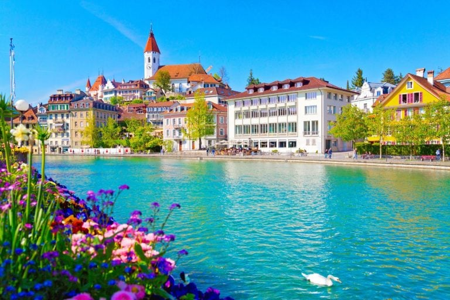

Os lagos e zonas úmidas da Suíça, como o Lago de Genebra e o Lago de Zurique, são vitais para a biodiversidade aquática, oferecendo abrigo para várias espécies de peixes e aves aquáticas. Esses ecossistemas desempenham um papel crucial na filtragem de água e na manutenção da qualidade ambiental. A Suíça tem se empenhado em proteger essa rica biodiversidade por meio de áreas protegidas e reservas naturais, como o Parque Nacional Suíço e o Parque Natural de Emmental. A conservação é apoiada por políticas rigorosas que visam preservar habitats e espécies ameaçadas, promover a sustentabilidade e o uso responsável dos recursos naturais. Embora o impacto do desmatamento e das queimadas seja relativamente menor em comparação com outras regiões do mundo devido ao tamanho reduzido do país e à forte regulamentação ambiental, a Suíça enfrenta desafios relacionados à gestão florestal e à conservação de habitats. O país tem uma rica cobertura florestal, mas o manejo inadequado pode afetar a biodiversidade local. As queimadas são menos comuns na Suíça do que em áreas mais propensas a incêndios, mas mudanças climáticas e práticas inadequadas podem aumentar o risco de incêndios florestais. Esses eventos podem impactar negativamente a fauna e a flora, especialmente espécies vulneráveis ou que possuem habitats específicos. A extinção de espécies é uma preocupação em áreas locais, especialmente para aquelas com habitats muito especializados, como as encontradas nos Alpes. A pressão do turismo, mudanças climáticas e atividades humanas podem ameaçar essas espécies. O país tem investido em programas de conservação para proteger e restaurar habitats críticos, demonstrando um compromisso com a preservação de sua biodiversidade única. No entanto, a biodiversidade da Suíça tem vindo a diminuir desde 1900 e está ameaçada. As perdas afetam os três níveis da biodiversidade: os meios naturais, as espécies e a diversidade genética. Atualmente, metade dos meios naturais e um terço das espécies estão ameaçados, e vários biótopos, como as pradarias, tendem a uniformizar-se. O declínio da biodiversidade deve-se essencialmente à expansão urbana, ao uso intensivo dos solos e das águas, à disseminação de espécies exóticas invasoras e ao uso de pesticidas e azoto na agricultura
